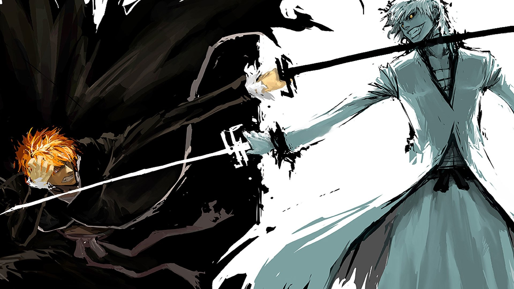
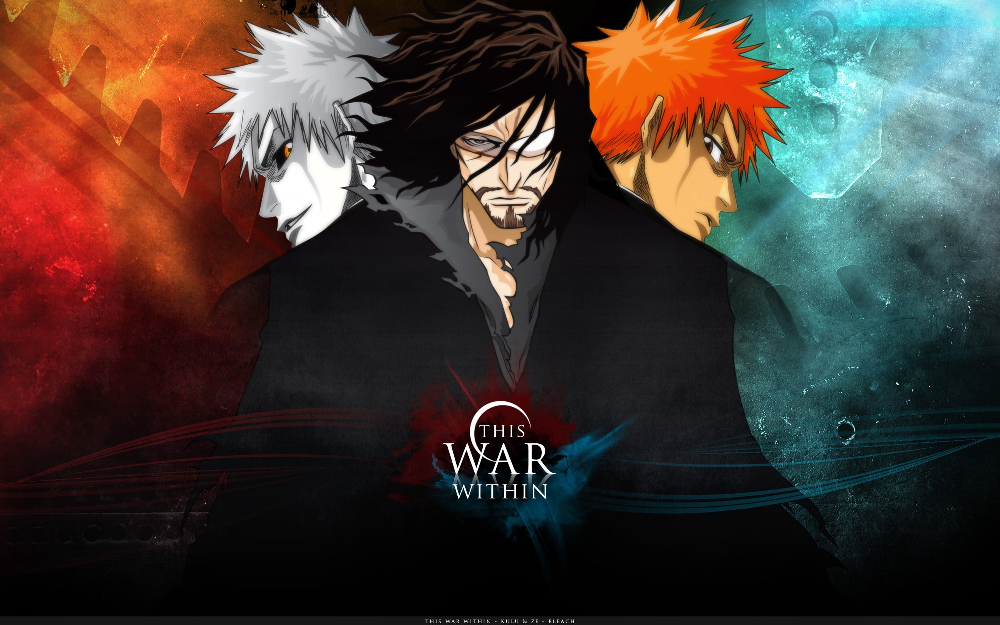
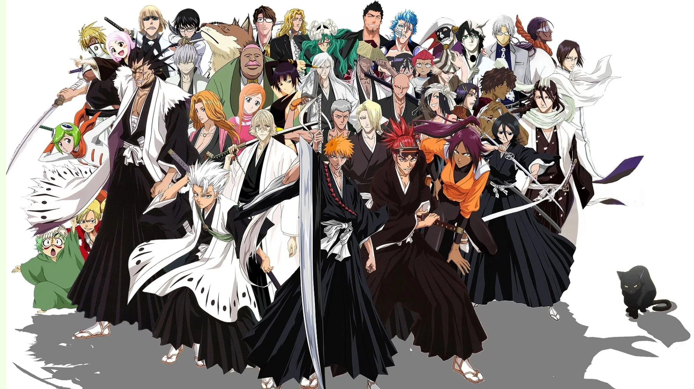
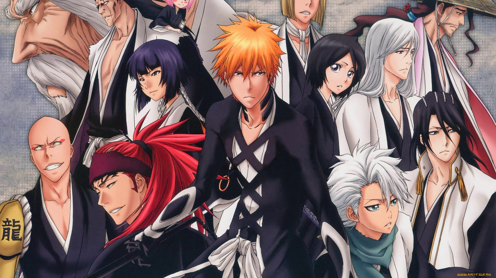

Galeria zdjęć:




Spis treści:
Czym jest Bleach
Bleach (jap. ブリーチ Burīchi) – shōnen manga napisana i zilustrowana przez Tite Kubo, publikowana w magazynie Shūkan Shōnen Jump. Manga powstawała od 2002 do 2016 roku i liczy 74 tomy. Na jej podstawie stworzono również serial anime, którego odcinki ukazywały
się tygodniowo w okresie od 5 października 2004 roku do 27 marca 2012 roku. W Polsce mangę od października 2009 roku wydaje wydawnictwo Japonica Polonica Fantastica. Emisja serialu w Polsce rozpoczęła się 12 września 2007 na kanale Hyper.
Bleach wyemitowano tam w dwóch seriach: 1-26 oraz 27-52. 27 maja 2009, stacja Hyper rozpoczęła emisję serii odcinków 53-74. Premiera kolejnych 22 odcinków (75-96) odbyła się 30 października 2009. Trzecia seria miała premierę w styczniu
2012 roku (odcinki 144-167). Od dnia 2 maja 2012 roku do 14 czerwca 2012 miała miejsce premiera 44 odcinków (168-212). Wersję polską z napisami opracowało Studio Publishing. 15 października 2018r. serial ten powrócił do polskiej telewizji
na kanale Polsat Games.
Powrót na górę strony
Fabuła
Akcja anime odkrywa się w fikcyjnym, mieście Karakura (jap. 空座). Opowiada o przygodach 15-letniego ucznia, obdarzonego zdolnością widzenia duchów. Początkowo, historia obejmowała losy Ichigo Kurosakiego i jego towarzyszki, Rukii Kuchiki. Dziewczyna, zaskoczona
faktem, iż Ichigo potrafi ją dostrzec, tłumaczy że jest Shinigami (Bogiem Śmierci) i ściga złe istoty zwane Pustymi (Hollowami). Kurosaki początkowo nie wierzy w jej opowieść, jednakże chwilę później, jego dom zostaje zaatakowany przez
jedną z tych istot. Rukia, starając się obronić jego rodzinę, zostaje ranna i przekazuje Ichigo swoją moc, czyniąc z niego Zastępczego Shinigami (jap. 死神代行, Shinigami Daikō). Chłopak, ratuje swoją rodzinę, jednakże ceną za to, jest konieczność
wykonywania pracy Shinigami. Dziewczyna, nie mogąc wrócić do "Społeczności Dusz" (Soul Society) z powodu utraty własnej mocy, decyduje się towarzyszyć mu w spełnianiu jego nowego powołania. Pierwsze rozdziały mangi, skupiały się przede
wszystkim na stopniowym wprowadzaniu i przedstawianiu głównych bohaterów, a także zapoznaniu widza z realiami świata.
Powrót na górę strony
Strony konfliktu
- Shinigami Shinigami (jap. 死神, dosł. „Bogowie śmierci”) – obrońcy ludzkości i pogromcy złych duchów. Nie posiadają ciała materialnego, przez co są niewidoczni dla przeciętnego człowieka. Prowadzą nieustającą walkę z istotami zwanymi Hollow.
Każdy Shinigami posiada swój miecz – Zanpakutō (dosł. Miecz ścinający dusze) i potrafi w różnym stopniu posługiwać się czterema technikami przydatnymi na polu bitwy – walki bronią, walki wręcz, technik poruszania się i demoniczną magią
(jap. 鬼道, Kidō).
- Quincy Quincy (jap. 滅却師(クインシー) Kuinshī, dosł. „Niszczyciele") – grupa ludzi, która jest w stanie dostrzec byty duchowe. Walczą za pomocą broni tworzonych z energii. Podczas gdy Shinigami funkcjonują korzystając wyłącznie z własnej energii,
Quincy absorbują ją z otoczenia. Poza tym Shinigami zabijając złe duchy, oczyszczają ich dusze, co pozwala Hollowom na przejście do Soul Society. Techniki Quincy zaś całkowicie niszczą te dusze. Metoda pozbywania się duchów przez Quincy
narusza równowagę Wszechświata, gdyż poprzez ich działania bilans ilości dusz na świecie bezpowrotnie maleje. Ten fakt zadecydował o tym, iż około 200 lat przed głównym wątkiem fabuły, Shinigami zniszczyli klan Quincy. Mimo to, poza
Uryū Ishidą, pozostał przynajmniej jeszcze jeden żyjący Quincy: Ryūken Ishida, jego ojciec.
-
Visored Visored (jap. ヴァイザード Vaizādo, dosł. „Zamaskowana Armia") – są swoistym przeciwieństwem Arrancarów, Shinigami, którzy przyswoili moc Hollowów. Ich wygląd prawie niczym nie różni się od ludzkiego. W przeciwieństwie do Arrancara, Visored nie posiada
dziury w klatce piersiowej, lecz przybiera częściowo postać Hollowa – maskę. Przywołując ową maskę, zyskują nadzwyczajną siłę, prędkość, wytrzymałość oraz zdolność posługiwania się Cero (pociskami energetycznymi). Visored jako były
Shinigami posiada własny Zanpakutō. Motywy tej organizacji to pokonanie Sōsuke Aizena. Ponad 100 lat przed wydarzeniami przedstawionymi w Bleachu stanowili czołówkę Gotei 13 (4 kapitanów i 4 poruczników). Hollowami zostali wskutek
eksperymentów Aizena. Dzięki pomocy Kisuke Urahary częściowo wrócili do swoich poprzednich postaci, a proces zamiany w Hollowów, któremu byli poddani ustąpił. Aby uniknąć egzekucji ze strony Soul Society są zmuszeni ukrywać się na
Ziemi. Po odkryciu swoich mocy Hollowa, główny bohater udaje się do ich siedziby na trening. Visoredzi pomagają mu opanować ową nową moc.
-
Arrancar Arrancar (jap. 破面(アランカル) Arankaru, hiszp. „Zerwana maska") – to rasa, którą wzmocnił były kapitan 5 oddziału w Soul Society Sōsuke Aizen za pomocą artefaktu, zwanego Hōgyoku (mała, czarna kula o wielkiej mocy stworzona przez Uraharę i ukryta
w ciele Rukii). Są to Hollowowie, którzy zdobyli moc Shinigami i zdjęli swoje maski. Arrancarzy istnieli już przed odejściem Aizena z Soul Society, lecz było ich niewielu. Są przeciwieństwem Vizardów. Arrancarzy są oznakowani numerami.
Kryterium, wedle którego numery zostają przydzielane, jest siła jednostki. Espada (jap. 十刃(エスパーダ) Esupāda, hiszp. „Dziesięć mieczy") – są najbardziej uprzywilejowani i najsilniejsi spośród wszystkich Arrancarów. Każdy członek Espady
jest wybierany na podstawie ilości energii duchowej (Reiatsu) i zostają im przydzielone numery od 0 do 9 określające ich rangę i siłę (0 najsilniejszy, 9 najsłabszy). Wyjątkiem jest Yammy Llargo, który jako jedyny w Espadzie posiada
przypisane dwa numery. Są to numery 0, który ukazuje się dopiero po uwolnieniu jego Resurrección oraz numer 10, który ukazany jest w stanie spoczynku. Numery są wytatuowane na ciele członka Espady. Espada kontroluje resztę Números
i jest odpowiednikiem rangi kapitańskiej (jap. 隊長, Taichō) w Gotei 13. Números (jap. 数字持ち（ヌメロス） Numerosu, – hiszp. „Posiadacze numerów") są specjalistami od walki. Są to ci Arrancarzy, którzy posiadają dwucyfrowe numery gdy się rodzą
od 11 do 99 adekwatne do ich wieku, nie siły (gdzie 11 jest najstarszy a 99 najmłodszy). Normalni Números, mimo iż każdy ma biały żakiet jako podstawowy strój, każdy podkreśla indywidualność danego Arrancara.
Powrót na górę strony